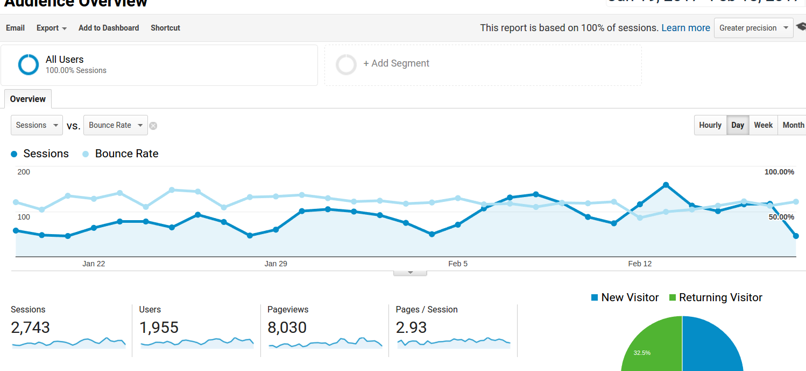

Chris Zietlow \ @aczietlow
The Rise and Fall of the Chaos Report Figures
Behavior Driven Development is about building software by describing its behaviors from the perspective of its stakeholders
It describes a cycle of interactions with well defined outputs, resulting in the delivery of working, tested software, that actually matters.
Bad: I want to make more money.
Good: I want to increase revenues by 12% over the next 12 months through our ecommerce store.
Business goals are specific, measurable, and are time bound
Imagine we have an ecommerce shop
Feature: Add sales tax and a delivery cost on checkout
Sales tax is 20%
Delivery cost for small orders (less than $20) is $3
Delivery cost for medium orders (more than $20) is $2
Given a product is priced at $15, when I add it to the order,
then the total order price should be $21
Given a product is priced at $25, when I add it to the order,
then the total order price should be $32
Given a product is priced at $20, when I add it to the order,
then the total order price should be $26
Given [initial context for the example]
When [action that the actor in the system or stakeholder performs]
Then [expected outcome of that action]
I want to be able to create and edit content on my site to inform the world that dogs are objectively better then cats.
Given I am an admin of the site
When I log in
Then I should be able to create content
Sweet sweet Demo
Only pay for what for what features are used. A pay per capabilitymodel.
Stop and ship as soon as we're done
Regular Delivery, Regular Feedback
Measure results
Know what "DONE" is
- tests are awesome
- tests are good for you, the client, and the product
- Behat Documentation
- Behat in a box
- Follow me on twitter: @aczietlow
We use Mink to interact with the browser
Some common usages of the Mink API
$element = $session->getPage();
$element->findAll($selector, $locator);
$element->getText();
$element->getHtml();
$element->isVisible();
$element->click();
$element->press();
$element->check();
$element->uncheck();